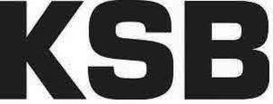

Trade Mark Journal No.2025/010 7 March 2025
UK00004067468 24 June 2024 (6,7,9,11,16,17,35,36,37,38,40,41,42)

- Class 6
- Metal hardware; flanges of metal (collars); cables, pipes and hoses, and accessories therefor, including valves, made of metal; metal moldings; metal shaped pieces; metal cladding parts; linings (metal -) for walls; metal house numbers; pipes and tubes of metal; metal pipe sleeve; metal tubes for gas; rain traps of metal; ducts made of metal for trunking conduits for gases; pipe extensions of metal; metal pipe muffs; metal pipe clips; branching tubes of metal for pipelines; beacons of metal, non-luminous; sheets and plates of metal; common metals and their alloys including stainless steel; steel sheets; metal building materials; metal fittings for pipes; pipeline fittings made of metal; metal springs.
- Class 7
- Water pumps for land vehicles; water pumps for vehicles; sewage disposal installations; shaving exhaust installations; pumps being machine parts; air pumps (garage installations); pneumatic pumps; electric pumps; electrical rotary converters; valves (parts of machines); valves (parts of machines); pressurising machines for drums; feed pumps; pump shafts; tyre inflating machines (garage installations); pressure multipliers for liquids; turbines (steam turbines), except for land vehicles; guides for machines; turbines other than for land vehicles; turbine blades treated with alloys; vertical turbine pumps; pistons (parts of machines or engines); pressure reducing valves (parts of machines); mechanical winders; hydraulic process control equipment; hydraulic process control equipment; hydraulic process controller; stern drives for ships; stop valves of metal (parts of machines); regulators as machine parts; regulators (parts of machines); regulators (parts of machines); pressure controllers (controller) as machine parts; moving and handling equipment; pumps, compressors and blowers; 3d printer; machinery for the preparation of surfaces for electrical and electronic components; yarn tension control devices (parts of machines); metal-working machines; combustion engines for industrial machines; reducing gears (parts of machines); clack valves (parts of machines); valves (parts of machines); fiber blowing machines; emission reduction units for motors and engines; packaging machines; assembly line conveyor machinery; capstans; lifting platforms; cables for lifts; mechanical lifting devices; hydraulic lifts; blowers; control cables for machines, engines or motors; aquarium pumps; drives for machines; electric drives for lifts; drive pulleys for power transmission belts of industrial machines; electric drives for machines; controls (hydraulic -) for machines, motors and engines; roller bearings (machine parts); joints (parts of engines); metal cutting tools (parts of machines); packaging machines for wrapping; machine tools for the metalworking industry; machines for the metal working industry; seal connectors (machine parts); motor-operated valves (machine parts); taps (parts of machines); springs being parts of machines; roosters from metal (valves) (machine parts); tapping valves for metallurgical purposes; pumps; compressors (machines); motorised valves; water supply machines (pumps); electric generators; electrostatic generator systems; electrostatic generator parts; housings (parts of machines); drives for converting rotary motion to linear motion (other than for land vehicles); electric alternators; drives for valves; steam traps; activity elements for valves (machine parts); valves for pressure regulators (parts of machines); motorised valves; spraying booms for towing behind vehicles for spraying crops; components for pump motors; machine tools for woodworking machines; machines for inflating balloons; electromechanical machines for the chemical industry; pumps for the extraction of vapour (machines); pumps (machines); pumps (machines) for the beverage industry; machines for the removal of water (pump); electric pumps (machines); pumps for the extraction of gases (machines); electrical generators using solar cells; mechanical control devices; mechanical process control instruments; mechanical process control equipment; process controllers (mechanical); electric drive mechanism for machines; disc brakes for machines; hydraulic valves (machine parts); gear pumps; hydraulic engines and motors; hydraulic valves; pneumatic control devices; pneumatic process control equipment; shaft couplings (parts of machines); pressure regulating valves being parts of machines; pressure regulators for lubricating installations; metal cutting tools (machines); level regulating valves (parts of machines); taps being parts of motors; sewing machine motors; vacuum control valves (parts of motors); pumps and spare parts for engines; pumping apparatus (machines).
- Class 9
- Remote controls for motors; sensors, detectors and monitoring instruments and apparatus; electric sensors; sensors for measuring instruments; sensors for motor control; electronic pressure sensors; equipment for improvement of energy efficiency; fittings for use of electrical equipment; circuit closers; toggle switches (electric); decorative switch covers, customized; solid-state memories; zener diodes; chromatogram analyzers for scientific or laboratory use; electric display apparatus; control and regulating apparatus; surveillance apparatus and instruments; global positioning system (gps) apparatus; gauge blocks; measuring devices and apparatus; apparatus and instruments for the connection of electricity; apparatus and instruments for the storage of electric power; apparatus and instruments for the conversion of electric power; apparatus and instruments for the line of electric current; remote controls; pressure regulators; precision measuring rods; meters; energy control devices; electronic variable speed units; solenoid valves; fire extinguishing installations; fire-extinguishing apparatus; fire- extinguishing apparatus; fire extinguishing systems; digital multimeters; digital storage media; process control instruments (electronic); regulators, electric; photovoltaic plants for the generation of electricity; machine monitors; computer software for the remote control of safety devices; computer software for the remote control of lighting devices; computer software for the remote control of appliances phone and walkie devices; remote controls for control of electronic products; radio apparatus and instruments; software; software for document automation; software for remote surveillance systems; software for enterprise technology; screensavers; software for electromechanics; data communications apparatus; hardware for data processing; computers; peripherals adapted for use with computers; operating system programs; computer operating system software; remote control apparatus(electronic -); electronic measuring instruments for taps; electrical controllers; thermal cutouts; programmable control devices; electronic controllers for servo motors; controllers for servomotors; storage apparatus for computer data; indicator for allowable load; digital telecommunications apparatus; file servers; modems; universal serial bus (usb) cables for cellular phones; bus bars; data buffers; computer software for cloud computing services; printers; computer software; network access server operating software; computer software for creating searchable databases of information and data; computer graphics software; computer software for database management; computer hardware; communication hubs; computer hardware; apparatus for transmission of sound; remote control devices for air conditioning systems; uninterruptible power supply apparatus (battery); software for engineering; software for product development; software for the manufacturing technology; software for mobile devices; sprinkler systems for fire protection.
- Class 11
- Heat pumps; stop valves for regulating gas; stop valves being safety apparatus for gas apparatus; control equipment for water supply apparatus; pressure relief valves (safety apparatus) for water pipes; over pressure valves (safety cameras) for water equipment; fittings; temperature control valves (parts of water supply installations); sanitary ware made of stoneware; safety fittings for gas pipes; control equipment for water systems; regulating apparatus for water supply apparatus; regulating apparatus for gas pipe installations; taps for regulating gas flow; installations for air extraction; taps; taps for water supply; pipe line cocks (spigots); taps for the control of water flow; taps (cocks, spigots) for pipes; pipe line cocks; pipeline valve taps; pipeline taps (faucet valves); water pipeline taps; water supply installations; water distribution installations; water conduit installations; water purification installations; water treatment plants; safety valves for water apparatus; rainwater purification plants; pressure supervision apparatus (safety apparatus for water apparatus); settler apparatus for water; chemical processing equipment; pressure relief valves (safety apparatus) for water apparatus; sewage treatment plants; pressure supervision apparatus(safety apparatus for gas pipes); regulating and safety accessories for gas pipes; pressure controllers (regulators) for gas pipes; heating apparatus; heaters for hot water supply lines; ventilators for heat exchangers; air conditioning systems; refrigeration installations; refrigerating equipment and apparatus.
- Class 16
- Teaching material; printed luggage labels; teaching material (except apparatus).
- Class 17
- Thermally insulated pipes made of plastic; porous irrigation hoses; flexible pipes for water; waterproofing packings; seals; material for the gasket.
- Class 35
- Providing consumer information relating to goods and services; Goods or services price quotations; Bidding quotation; Providing recommendations of goods to consumers for commercial purposes; Commercial information and advice for consumers in the choice of products and services; Provision of an online marketplace for buyers and sellers of goods and services; Advisory and consultancy services relating to the procurement of goods for others; Advisory services relating to commercial transactions; Provision of information concerning commercial sales; Exhibitions (Conducting-) for business purposes; Exhibitions (Conducting-) for advertising purposes; Promoting and conducting trade shows; Distribution of advertisements and commercial announcements; Dissemination of advertisements via the Internet; Dissemination of advertising and promotional materials; Dissemination of advertising matter; Dissemination of advertisements; Distribution of prospectuses for advertising purposes; Distribution of advertising announcements; Distribution of advertising material; Dissemination of advertising matter by mail; Preparation of accounts; Preparation of advertising material; Updating of advertising material; Cost price analysis; Purchasing services; Business administration; Business management planning; Strategic business planning; Business strategy and planning services; Demonstration of goods; Presentation of goods and services; Marketing; Brand positioning services; Sales management services; Promotional marketing; Internet marketing; Advertising and marketing; Advertising, marketing and promotional services; Digital marketing; Promotion, advertising and marketing of on-line websites; Market analysis; Marketing research; Marketing research and analysis; Digital advertising services; Human resources consultancy; Employment counselling; Counselling on business matters; Advisory services relating to business planning; Advice relating to marketing management; Business planning consultancy; Advisory services relating to promotional activities; Business management and organization consultancy; Advisory services and information in business organization and management; Product launch services; Provision of information relating to marketing; Company record keeping [for others]; Import-Export agency services; Compilation of business statistics and commercial information; Compilation of business statistics; Document reproduction; Document preparation; Design of advertising brochures; Preparation of business profitability studies; Publication of publicity materials; Publication of advertising literature.
- Class 36
- Financial advisory and management services; redemption of luncheon vouchers; advice on corporate finance; advice on company property; tax advice regarding reviews; consultants in the corporate finance; provision of guarantees and collateral; credit unions; moneylending; financial leasing services; advisory services relating to international securities; agencies for commodity futures trading; information services relating to the automated transfer of funds.
- Class 37
- Floor maintenance services; repair services for toys; repair of transport containers; repair information; provision of information about repairs; installation of oil refineries; painting of buildings; repair of electrical appliances and electrical plants; installation of industrial plants; erection of chemical plants; dismantling of industrial plants; installation of fire fighting equipment; installation of grills; repair of industrial machines; repair of waterworks equipment; maintenance of domestic refrigeration; dismantling of industrial plant; maintenance and repair of utilities in buildings; sewer pipe servicing; insulation of pipelines; installation of pipe systems for conducting of steam; sheathing of pipes; maintenance of pipeline systems; pipeline construction and maintenance; installation of pipework systems; maintenance and repair of pipelines; laying of pipelines; maintenance of data-processing terminals; removal of graffiti; renovation of kitchens; installation of water supply facilities; plumbing apparatus (rental of -); installation, assembly, repair, maintenance, maintenance of machines, pumps, compressors, generators, fittings, motors, technical equipment, electronic installations and electronic appliances, and parts therefore; interference suppression and restoration of machines, pump, turbines, compressors, generators, taps and fittings, engines, technical installations, electronic installations and electronic appliances, and parts therefor; pump repairing; irrigation devices installation and repair; rental of electrical or electronic equipment for controlling and regulating pumps; rental of electrical or electronic equipment for controlling and regulating electrical machines in the pump sector; rental of electrical or electronic equipment for controlling and regulating electric motors in the pump sector; leasing of pumps, pump installations and plumbing apparatus.
- Class 38
- Telecommunication; providing internet access; providing telecommunications connections to a global computer network or databases; rental of teleprocessing apparatus and instruments; rental of telecommunication equipment; rental of information transmission equipment; electronic voice messaging services; transmission of data material; transmission of data; digital communications services; providing access to e-commerce platforms on the internet; telecommunications services through portals; providing access to an electronic marketplace(portal) in computer networks; electronic transmission of data.
- Class 40
- Digital printing; photogravure printing; rental of boilers; on-site water purification services; water treatment; water treatment; recycling of advertising material; rental of pumps and fittings for water, energy and heat supply in the building technology, water and energy technology; rental of electrical or electronic equipment, namely frequency, switch cabinets, control and control electronics, sensors and actuators for controlling and regulating electrical machines in the field of fittings for the supply of water, energy and heat; rental of electrical or electronic equipment, namely frequency, switch cabinets, control and control electronics, sensors and actuators for controlling and regulating fittings for the supply of water, energy and heat in the building, industry-, water or energy technology; rental of electrical or electronic equipment, namely frequency, switch cabinets, control and control electronics, sensors and actuators for controlling and regulating electric motors in the area of fittings for the supply of water, energy and heat.
- Class 41
- Providing of training; training in communication techniques; training for parents in the organisation of parent support groups; provision of education and training; arranging and conducting of educational events; teaching events; organisation of educational events; arranging of an annual educational conference; organising of competitions (entertainment) by telephone; organisation of youth training schemes relating to the tool industry; training; professional consultancy relating to education; conducting training seminars for clients; further training; technical training relating to safety; organization of training (courses); execution of training classes (teaching); arranging of presentations for training purposes; computer based educational services; publishing services carried out by computerised means; conducting of educational courses relating to business management; arranging teaching programmes; publication of training material; publication of teaching materials; published publications; publication of printed matter relating to pet fish; news reporting; publication of leaflets; providing electronic publications (not downloadable).
- Class 42
- Research relating to demographics; research services; civil engineering drawing services; scientific research and development; material testing; engineering services; research in the field of science carried out by engineers; planning of technical projects; installation, maintenance, updating and upgrading of computer software; technical project studies; engineering feasibility studies; preparation of technical operating instructions; technical consultancy services relating to electrocardiograms; digitalization of documents; development of engines; computer aided design services relating to architecture; testing services for certification of quality or standards; computer programming of video and computer games; implementation of studies of engineering projects; implementation of technical research projects and studies; quality control; environmental testing and inspection services; cloud hosting services for a public cloud; cloud hosting services; monitoring of computer systems for security purposes; rental of business software for computer networks and server-; rental of memory space on servers; design and development of operating software for computer networks and servers; cloud computing; computer software installation and computer software maintenance; computer software maintenance; compilation of data-processing programs; rental of computer hardware; computer hardware and computer software rental; design and development of networks; inspection of machines, pumps, turbines, compressors, generators, fittings, motors, electrical and electronic apparatus and installations composed of the aforesaid goods; technical planning, calculations and technical consultancy; testing of components and function testing; preparation of technical studies; design and maintenance of websites for mobile phones; creating and updating of homepages for computer networks; hosting of customized web pages; programming of customized websites; development of computer software for logistics, supply-chain management and e-business portal; cloud electronic data storage services.
KSB SE & Co. KGaA
Representative: Forresters IP LLP